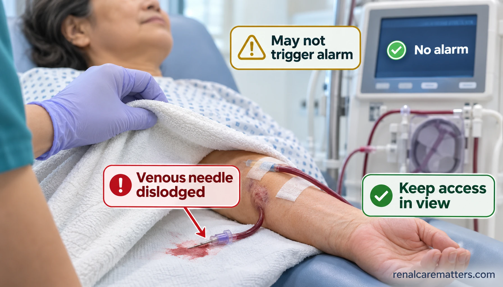
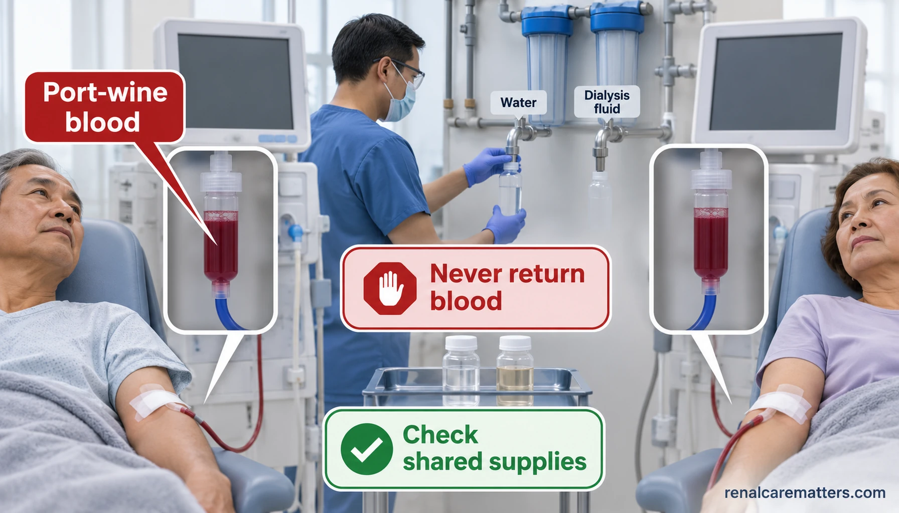
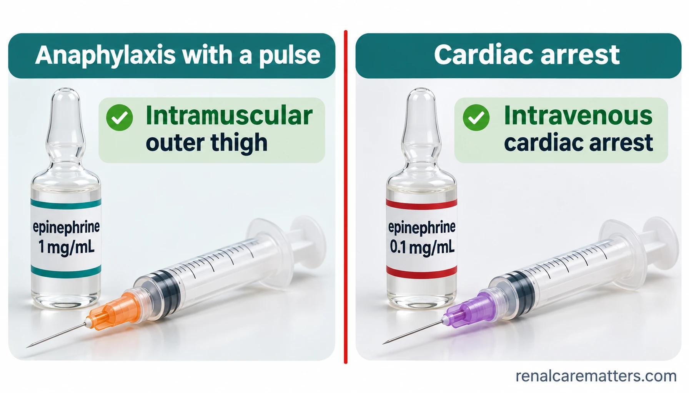
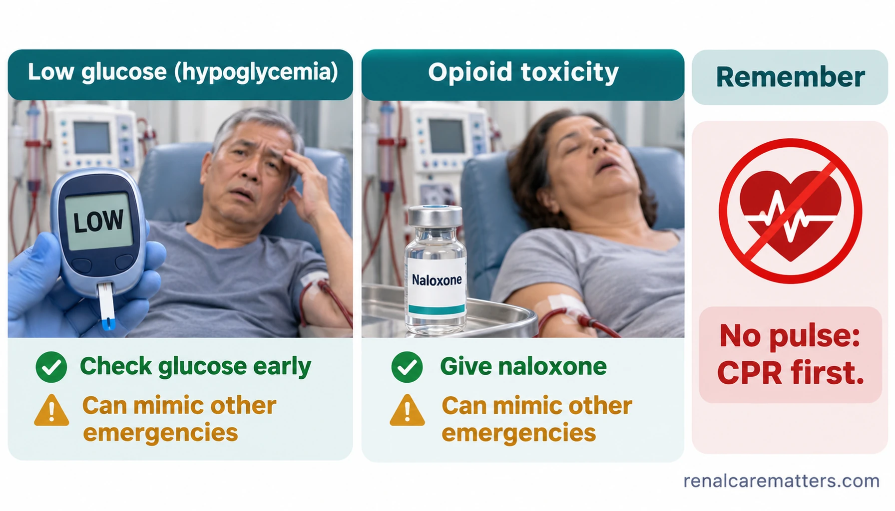

Needle dislodgement and hemorrhage, hemolysis, severe dialyzer reaction and anaphylaxis, hypoglycemia, and opioid-associated emergencies.
PublishedNailathalaGipatikPepalwal:ReferencesMga SanggunianMga TinubdanReng Reperensya:3Audience: Every member of the dialysis shift team: hemodialysis nurses, charge and head nurses, physicians-on-duty, attending nephrologists, dialysis and biomedical technicians, nurse assistants and support staff · pediatric dialysis teams for Part 4Read timeOras ng pagbasaOras sa pagbasaOras ning pamamasa:
This module is study material for dialysis teams. It explains the reasoning behind resuscitation decisions; it is not a unit protocol, an order set, or certification. Doses and energies are quoted from the 2025 American Heart Association (AHA) guidelines and the European Resuscitation Council (ERC) where named, so you can recognize them; give medicines only within your license and your unit’s approved protocol. Escalation always follows your unit protocol, and you always ask the attending nephrologist for guidance. Every case, name, and identifier is fictional.
Learning objectives
After this module you should be able to
Recognize venous needle dislodgement and access hemorrhage early, control bleeding, and treat hemorrhagic shock with the team.
Recognize suspected hemolysis, never return the blood, treat the potassium risk, and check for a cluster.
Treat a severe dialyzer reaction or anaphylaxis with intramuscular epinephrine first, and distinguish it from the intravenous epinephrine of cardiac arrest.
Check glucose early in any collapse, and give an opioid antagonist for respiratory arrest from suspected opioid toxicity without interrupting cardiopulmonary resuscitation (CPR).
Move from each circuit emergency to the cardiac arrest algorithm the moment the pulse is lost.
Classroom 1 hSkills lab 1 hSupervised placement 1 h
Pre-testBefore you read, answer the 5 self-assessment questions and note your score. After the module, select New set of questions and compare. The difference is what you learned; the questions you still miss are what to reread.
Start here
The big picture, in plain words
In plain wordsMost cardiac arrests in a dialysis unit do not come out of nowhere. They are the last step of a problem that started a few minutes earlier: a needle sliding out under a blanket, blood turning the color of wine, a rash in the first minutes of treatment, a patient who becomes confused. Catch the problem in its first minutes and you may never need to compress.
The picture has a limit. Some of these emergencies go from first sign to arrest very fast, and some have no obvious first sign at all: a dislodged venous needle may not set off an alarm. So recognition here has two parts. Look actively, because machines miss things. And keep the arrest algorithm one step away, ready the instant the pulse goes.
Each of these emergencies has its own signed-off Quick Card. This module explains the reasoning behind the cards, and the point where each one becomes a resuscitation.
Figure 1 · Key terms for this module
Venous needle dislodgementThe return needle coming out of the access while the pump keeps running, so blood flows onto the bed instead of back into the patient.
Hemorrhagic shockLow blood pressure and poor perfusion from blood loss.
HemolysisDestruction of red blood cells in the circuit, releasing potassium and hemoglobin.
AnaphylaxisA severe, rapid allergic reaction affecting breathing, circulation, or both.
Opioid antagonistA drug such as naloxone that reverses opioid effects.
ClusterTwo or more patients affected by the same problem at the same time.
Opening case · fictional
Case: Needle out
At 4:15 p.m., in a busy unit in Bacolod City, Mrs. Gloria Santiago, 74, is asleep under a thick blanket in her third hour of dialysis through a left forearm fistula. Two stations away, a patient is vomiting, and both nearby nurses are there. The floor near Station 12 is wet from a mopping that was not finished.
A support aide passing Station 12 notices blood dripping from under the blanket onto the floor. The machine shows no alarm. Mrs. Santiago is pale and does not wake easily.
Before reading on, decide:
What does the aide do in the first ten seconds?
Why did the machine not alarm, and what does that teach?
When does this become a resuscitation, and what changes then?
Keep your answers in mind. The lesson gives you what you need, and the case review near the end shows one sound response.
Lesson · part 1
Needle dislodgement and hemorrhage
When the venous needle comes out with the blood pump running, the machine keeps pulling blood from the arterial needle and delivering it onto the bed. The venous pressure alarm is supposed to catch this, but the pressure measured is mostly the resistance of the needle and line itself, so it may fall only a little when the needle is out: the alarm can stay silent.1 A sleeping patient under a blanket can lose a large volume within minutes.

Figure 2. A dislodged venous needle may not trigger an alarm. Keep the access in view.
Step (Card 4)
Who
Why
Lift the blanket; look at both needle sites and line connections
Anyone
The machine may not alarm
Stop the blood pump; clamp the line on both sides of the break
Nurse (any trained staff per policy)
Stops the loss
Firm pressure on the site with gloved hands and gauze
Nurse or aide
Controls bleeding from the access
Lay flat; check consciousness, pulse, pressure; oxygen per protocol
Second nurse
Hemorrhagic shock may follow
Call for help and the cart; call the physician-on-duty and the attending
Charge nurse
Shock or arrest may need the team
Never reinsert a dislodged needle, and never return blood through a line end that has been open. If the patient loses the pulse, this is now cardiac arrest with hypovolemia from hemorrhage as the reversible cause: compressions, the arrest algorithm, saline through a working access or a new IV, and early transfer for blood. The wet floor is a hazard for staff during compressions and for the defibrillator; dry it or lay towels.
RememberA quiet machine proves nothing. Keep the access in view, lift the blanket, stop and clamp, press, and be ready for arrest from blood loss.
Lesson · part 2
Hemolysis: blood that must never go back
Hemolysis in the circuit happens when red cells are damaged by overheated or wrongly mixed dialysis fluid, chemical contamination of the water (such as chlorine or chloramine), or kinked or faulty blood tubing. The patient may report chest, back or abdominal pain, nausea, and breathlessness; the blood in the venous line looks translucent, cherry-red or “port-wine.” Broken red cells release potassium, so the danger is both the hemolysis and the potassium (Card 6).2

Figure 3. Hemolysis: port-wine blood, never returned, and possibly more than one patient.
Action
Reason
Stop the pump, clamp the lines, end the treatment
Stops further damage
Do not return the blood, ever
It carries potassium from broken cells
Monitor, urgent potassium and hemoglobin; treat potassium per Card 10
Arrest from hyperkalemia is the main risk
Check every patient on the same water and concentrate
Hemolysis is often a cluster
Keep lines, dialyzer, lot numbers, water and fluid samples
The cause must be found before restarting
If one patient in a unit has hemolysis, assume others may too until the water and fluid are cleared. In a cluster, the charge nurse may face two deteriorating patients at once: the watcher role and the Medical Director’s involvement become essential. If a patient arrests, potassium is the reversible cause to treat during CPR (Module 8), and the circuit blood is not returned.
RememberPort-wine blood is never returned. Treat the potassium, check every patient on the same supply, and keep the evidence.
Lesson · part 3
Severe reactions: epinephrine first, and the right epinephrine
A severe dialyzer reaction or anaphylaxis usually begins within the first minutes of treatment, or soon after a drug such as intravenous iron, an antibiotic or heparin: itching, hives, flushing, throat tightness, wheeze, swelling of the lips or face, low blood pressure, collapse (Card 7). The treatment that saves lives is intramuscular epinephrine into the outer thigh, given early as the protocol directs. Antihistamines and steroids do not replace it. The blood pump is stopped, the lines clamped, and the blood not returned, because the circuit carries the trigger.

Figure 4. Anaphylaxis with a pulse and cardiac arrest use different routes and concentrations of epinephrine. Name both aloud.
Anaphylaxis with a pulse
Cardiac arrest (any cause, including anaphylaxis)
Route
Intramuscular, outer thigh
Intravenous or intraosseous
Usual preparation
1 mg/mL (1:1,000) ampule or autoinjector
0.1 mg/mL (1 mg in 10 mL), or the 1 mg/mL ampule diluted to 10 mL per protocol
Adult dose
As the unit’s anaphylaxis protocol directs, repeated at its interval
1 mg every 3 to 5 minutes
Main danger
Giving the intramuscular (IM) concentration intravenously as a bolus
Delaying CPR for drugs
The same drug in two concentrations for two routes is a classic tenfold error. Say the concentration and the route aloud and have the second nurse repeat them. If the patient arrests, the 2025 American Heart Association (AHA) special-circumstances chapter says it is reasonable to give isotonic intravenous fluids in cardiac arrest from anaphylaxis (Class of Recommendation (COR) 2a, Level of Evidence (LOE) C-EO), and that the effectiveness of the standard intramuscular anaphylaxis dose of epinephrine in arrest is uncertain (COR 2b, LOE C-EO).3 In arrest, follow the standard arrest algorithm with intravenous epinephrine and give fluids.
RememberAnaphylaxis with a pulse: intramuscular epinephrine first, blood not returned. Arrest: intravenous epinephrine 1 mg every 3 to 5 minutes and fluids. Say the concentration aloud every time.
Lesson · part 4
Low glucose and opioid toxicity: the mimics
Two treatable causes often hide inside a “collapse on dialysis”: low blood glucose and opioid toxicity. Both can look like a stroke, a seizure, an arrhythmia or simply a deep sleep.

Figure 5. Low glucose and opioid toxicity mimic other emergencies. Check glucose early; if there is no pulse, CPR comes first.
Low glucose
Dialysis patients with diabetes are at risk of hypoglycemia during and after a session, especially with poor intake, insulin, or glucose-free dialysis fluid. Check capillary glucose early in any confusion, drowsiness, sweating or seizure, and treat per protocol (Card 11). If the patient has no pulse, CPR comes first and glucose is checked during the arrest as a reversible cause.
Opioid toxicity
Some opioids and their active metabolites accumulate when the kidneys do not clear them, so a usual dose can cause slow, shallow breathing and pinpoint pupils in a dialysis patient. The 2025 AHA special-circumstances chapter states that an opioid antagonist such as naloxone should be given to people with respiratory arrest from suspected opioid overdose, and that giving it during cardiac arrest from presumed overdose may be reasonable as long as it does not interrupt high-quality CPR.3 Ventilation comes first in respiratory arrest; compressions come first if there is no pulse.
Finding
Pulse present
No pulse
Low glucose suspected
Check glucose; treat per protocol
CPR; check glucose as a reversible cause
Opioid toxicity suspected, not breathing
Ventilate with bag-mask; naloxone per protocol
CPR; naloxone may be considered without interrupting CPR
RememberCheck glucose early in every collapse. For suspected opioid toxicity, ventilate first and give an antagonist; if there is no pulse, CPR comes first.
Stop and callAny bleeding access with paleness or low pressure, port-wine blood, signs of anaphylaxis, or a collapse with low glucose or slow breathing: use the matching Quick Card now, call the physician-on-duty and the attending nephrologist, and follow your unit protocol. If the pulse is lost, go to Card 1.
On the floor
Real situations: problems and solutions
These are fictional but typical. For each one, cover the answer, decide what you would do, then compare. Where a step depends on local rules, your unit’s procedure and your supervisor’s direction come first.
The blanket rule
What you see
Patients feel cold and pull blankets over their access arms during the session.
What is likely going on
Accesses are hidden, so dislodgement can go unseen.
What to do
Keep the access arm uncovered or use a short drape; check under blankets on every round.
Why it matters
Visual checks find what alarms miss.
Two patients with back pain
What you see
Within ten minutes, two patients on the same side of the unit report back pain and nausea.
What is likely going on
Possible hemolysis cluster from the water or fluid.
What to do
Look at both venous lines; stop and clamp if blood looks abnormal; alert the charge nurse and technician to check the supply.
Why it matters
Clusters point to a shared cause.
The iron infusion
What you see
A patient develops flushing and wheeze during intravenous iron in the session.
What is likely going on
Possible drug anaphylaxis, not only a dialyzer reaction.
What to do
Stop the infusion and the pump, give IM epinephrine per protocol, and call the physician.
Why it matters
Any drug given on dialysis can cause anaphylaxis.
Field notes
Label the anaphylaxis tray with the route and concentration in large letters.
Keep a glucose meter and strips in the crash cart.
Case review
Back to the case: Needle out
The first ten seconds. The aide lifts the blanket, sees the venous needle out, and shouts for help. If trained and permitted by unit policy, the aide stops the blood pump and clamps; otherwise the aide presses firmly on the site with gloved hands and gauze while the nurse comes. The nurse stops the pump and clamps both sides of the break.
Why no alarm. The venous pressure measured by the machine is mostly the resistance of the needle and tubing, so it may not fall enough to alarm when the needle comes out. The lesson: keep the access uncovered or check under the blanket, and never trust a quiet machine.
When it becomes a resuscitation. Mrs. Santiago is pale and hard to wake: check her pulse and pressure now. If she has a pulse with low pressure, lay her flat, give oxygen and saline per protocol through a new IV (not through the open line), and arrange transfer for blood. If she loses her pulse, it is cardiac arrest with hemorrhage as the cause: compressions, the arrest algorithm, fluids, and early transfer. The wet floor is dried or covered before anyone kneels or shocks. The watcher stays with the vomiting patient and the rest of the unit.
Interactive case · fictional
Interactive cases
Work through a shift one decision at a time. The panel at the top changes with what you choose. After each choice you see why it is, or is not, the best move; after a weaker one you can try again or carry on and see where it leads. Your first choice at each step is scored. The score stays on this device and nothing is sent anywhere. In real practice, your unit’s protocol and the people responsible for each decision come first.
Skills checklist: Circuit emergencies on the edge of arrest
In three short simulator scenarios (needle out, hemolysis, anaphylaxis), take the first actions and state the point at which the arrest algorithm begins. Your preceptor rates each step as satisfactory, needs practice, or not observed. Steps marked Critical must all be satisfactory before sign-off. This checklist supports supervised learning; your unit’s own procedure and competency form are the authority. A printable version of every checklist is on the trainer page.
CriticalLifts the blanket and inspects both needle sites and connections without waiting for an alarm.
CriticalStops the pump, clamps both sides of a break, and applies firm pressure.
CriticalNever returns blood after hemolysis, a severe reaction, or through an open line end.
Checks every patient on the same water supply when hemolysis is suspected.
CriticalGives or prompts intramuscular epinephrine first in anaphylaxis, stating the concentration and route aloud.
CriticalDistinguishes IM anaphylaxis epinephrine from IV arrest epinephrine.
Checks capillary glucose early in any collapse.
CriticalMoves to the arrest algorithm the moment the pulse is lost.
Placement activity. Audit one shift for how many accesses are visible versus covered by blankets, and present the result at the staff meeting.
Self-assessment
Check your understanding
Each visit draws 5 questions at random from this module’s 10-question bank. Choose the single best answer for each, then select Check answers; an explanation appears under the best answer. Select New set of questions for a different mix. A good target is 4 of 5 on two different sets. Nothing you select is sent anywhere; scoring happens in your browser.
Frinak, S., Kennedy, J., Zasuwa, G., Passalacqua, K. D., & Yee, J. (2023). Detection of hemodialysis venous needle dislodgment using venous access pressure measurements: A simulation study. Kidney360, 4(4), e476–e485. https://doi.org/10.34067/KID.0000000000000093
Greenberg, K. I., & Choi, M. J. (2021). Hemodialysis emergencies: Core curriculum 2021. American Journal of Kidney Diseases, 77(5), 796–809. https://doi.org/10.1053/j.ajkd.2020.11.024
Cao, D., Arens, A. M., Chow, S. L., Easter, S. R., Hoffman, R. S., Lagina, A. T., Lavonas, E. J., Patil, K. D., Sutherland, L. D., Tijssen, J. A., Wang, G. S., Zelop, C. M., Rodriguez, A. J., Drennan, I. R., & McBride, M. E. (2025). Part 10: Adult and pediatric special circumstances of resuscitation: 2025 American Heart Association guidelines for cardiopulmonary resuscitation and emergency cardiovascular care. Circulation, 152(16_suppl_2), S578–S672. https://doi.org/10.1161/CIR.0000000000001380
Educational reviewer and practice resource for dialysis teams. It is not an American Heart Association (AHA) course, it is not BLS, ACLS or PALS certification, and online completion does not establish hands-on competence. Staff certify through an authorized training center. Your unit’s approved protocol, crash-cart stock and machine manufacturer’s instructions govern every real event.